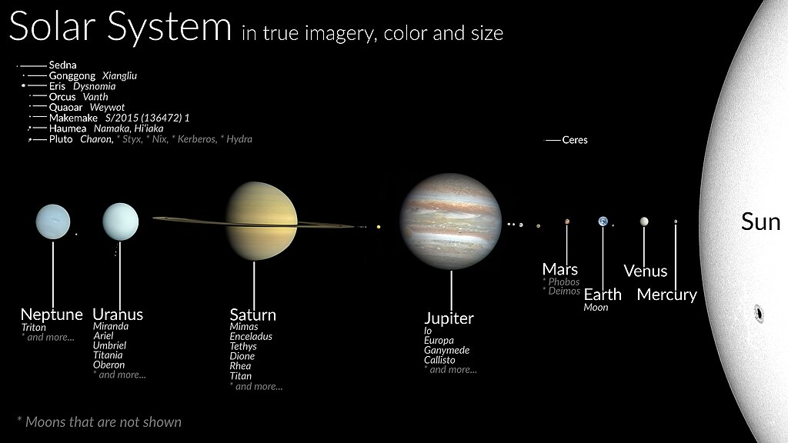
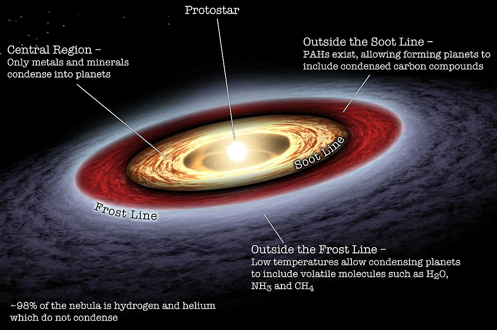
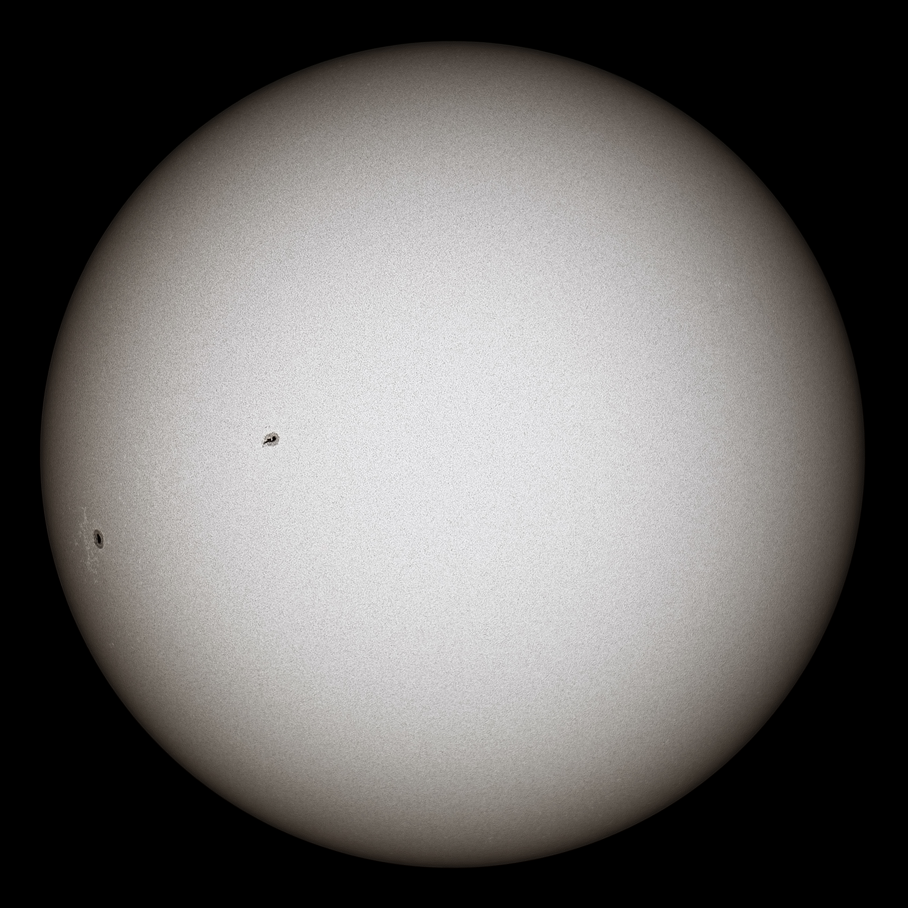
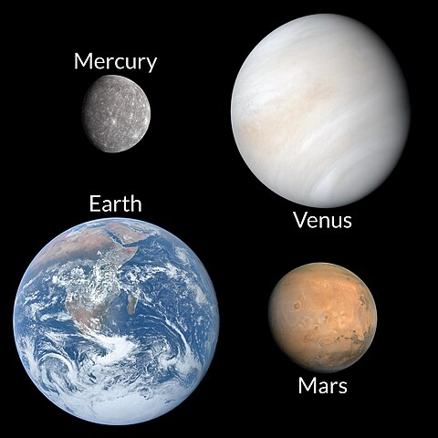
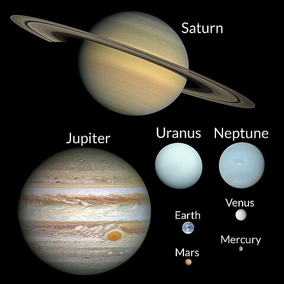

Our Solar System

About:
- There are many planetary systems in the universe, with planets orbiting host stars.
- Our planetary system is called the solar system because we use the word “solar” to describe things related to our star, after the Latin word for Sun, "solis."
- The solar system has one star, eight planets, five dwarf planets, at least 290 moons, more than 1.3 million asteroids, and about 3,900 comets.
- It is located in an outer spiral arm of the Milky Way galaxy called the Orion Arm, or Orion Spur.
Past
- The Solar System formed 4.568 billion years ago from the gravitational collapse of a region within a large molecular cloud.
- This initial cloud was likely several light-years across and probably birthed several stars.
- As is typical of molecular clouds, this one consisted mostly of hydrogen, with some helium, and small amounts of heavier elements fused by previous generations of stars.
- As the pre-solar nebula collapsed, conservation of angular momentum caused it to rotate faster. The center, where most of the mass collected, became increasingly hotter than the surrounding disc.
- The giant planets (Jupiter, Saturn, Uranus, and Neptune) formed further out, beyond the frost line, the point between the orbits of Mars and Jupiter where material is cool enough for volatile icy compounds to remain solid.

Present and future
- The main-sequence phase, from beginning to end, will last about 10 billion years for the Sun compared to around two billion years for all other subsequent phases of the Sun's pre-remnant life combined.
- Solar wind from the Sun created the heliosphere and swept away the remaining gas and dust from the protoplanetary disc into interstellar space.
- The Solar System is in a relatively stable, slowly evolving state by following isolated, gravitationally bound orbits around the Sun.
- The Solar System will remain roughly as it is known today until the hydrogen in the core of the Sun has been entirely converted to helium, which will occur roughly 5 billion years from now.
Orbit
- The planets and other large objects in orbit around the Sun lie near the plane of Earth's orbit, known as the ecliptic.
- Most of the planets in the Solar System have secondary systems of their own, being orbited by natural satellites called moons.
- Most of the larger moons orbit their planets in prograde direction, matching the planetary rotation; Neptune's moon Triton is the largest to orbit in the opposite, retrograde manner.
- With the exception of Mercury, the orbits of the planets are nearly circular, but many comets, asteroids, and Kuiper belt objects follow highly elliptical orbits.


Distance and Scales
- The astronomical unit [AU] (150,000,000 km; 93,000,000 mi) would be the distance from the Earth to the Sun if the planet's orbit were perfectly circular.
- Thus, the Sun occupies 0.00001% (10−5 %) of the volume of a sphere with a radius the size of Earth's orbit, whereas Earth's volume is roughly one millionth (10−6) that of the Sun. Jupiter, the largest planet, is 5.2 astronomical units (780,000,000 km; 480,000,000 mi) from the Sun and has a radius of 71,000 km (0.00047 AU; 44,000 mi), whereas the most distant planet, Neptune, is 30 AU (4.5×109 km; 2.8×109 mi) from the Sun.
Sun

- The Sun is the Solar System's star and by far its most massive component. Its large mass (332,900 Earth masses), which comprises 99.86% of all the mass in the Solar System, produces temperatures and densities in its core high enough to sustain nuclear fusion of hydrogen into helium.
- Because the Sun fuses hydrogen into helium at its core, it is a main-sequence star. More specifically, it is a G2-type main-sequence star, where the type designation refers to its effective temperature.
- The Sun is a population I star; it has a higher abundance of elements heavier than hydrogen and helium ("metals" in astronomical parlance) than the older population II stars.
- The outermost layer of the Solar atmosphere is the heliosphere, which permeates much of the Solar System. Along with light, the Sun radiates a continuous stream of charged particles (a plasma) called the solar wind.
Inner Solar System
- Inner planets
- Asteroids
- Inner planets
- Mercury-
Mercury (0.31–0.59 AU from the Sun)[D 6] is the smallest planet in the Solar System. Its surface is greyish, with an expansive rupes (cliff) system generated from thrust faults and bright ray systems formed by impact event remnants.
- Venus-Venus (0.72–0.73 AU)[D 6] has a reflective, whitish atmosphere that is mainly composed of carbon dioxide. At the surface, the atmospheric pressure is ninety times as dense as on Earth's sea level.[97] Venus is the hottest planet, with surface temperatures over 400 °C (752 °F), mainly due to the amount of greenhouse gases in the atmosphere.
- Earth-Earth (0.98–1.02 AU)[D 6] is the only place in the universe where life and surface liquid water are known to exist. Earth's atmosphere contains 78% nitrogen and 21% oxygen, which is the result of the presence of life.[103][104] The planet has a complex climate and weather system, with conditions differing drastically between climate regions.
- Mars-Mars (1.38–1.67 AU)[D 6] has a radius about half of that of Earth.[116] Most of the planet is red due to iron oxide in Martian soil,[117] and the polar regions are covered in white ice caps made of water and carbon dioxide.[118] Mars has an atmosphere composed mostly of carbon dioxide, with surface pressure 0.6% of that of Earth, which is sufficient to support some weather phenomena.

- Asteroids
- Astroid Belts
- Ceres (2.55–2.98 AU) is the only dwarf planet in the asteroid belt. It is the largest object in the belt, with a diameter of 940 km (580 mi). Its surface contains a mixture of carbon,frozen water and hydrated minerals.
- Vesta (2.13–3.41 AU) is the second-largest object in the asteroid belt. Its fragments survive as the Vesta asteroid family and numerous HED meteorites found on Earth.
- Pallas (2.15–2.57 AU) is the third-largest object in the asteroid belt.[148] It has its own Pallas asteroid family.
- Astroids Examples
- No vulcanoids, asteroids between the orbit of Mercury and the Sun, have been discovered.
- One asteroid is discovered to orbit within Venus's orbit as of 2024, which is 594913 ꞌAylóꞌchaxnim.
- Near-Earth asteroids have orbits that approach relatively close to Earth's orbit,[154] and some of them are potentially hazardous objects because they might collide with Earth in the future.
Outer Solarsystem
- Outer Planets
- Jupiter (4.95–5.46 AU) is the biggest and most massive planet in the Solar System. On the surface, there are orange-brown and white cloud bands moving via the law of atmospheric circulation, with giant storms swirling on the surface such as the Great Red Spot and various white 'ovals'.
- Saturn (9.08–10.12 AU)[D 6] has a distinctive visible ring system orbiting around its equator, which is composed of small ice and rock particles. Like Jupiter, it is mostly made of hydrogen and helium.At the north and south poles, Saturn has peculiar hexagon-shaped storms larger than the diameter of Earth.
- Uranus (18.3–20.1 AU),[D 6] uniquely among the planets, orbits the Sun on its side as its axial tilt is >90°. This gives the planet extreme seasonal variation as each pole points toward and then away from the Sun.
- Neptune is the eighth and farthest known planet from the Sun. It is the fourth-largest planet in the Solar System by diameter, the third-most-massive planet, and the densest giant planet. It is 17 times the mass of Earth, and slightly more massive than fellow ice giant Uranus.

| Object |
Density |
Semi-Major axis(AU) |
| Mean |
Uncompressed |
| Mercury |
5.4 |
5.3 |
0.39 |
| Venus |
5.2 |
4.4 |
0.72 |
| Earth |
5.5 |
4.4 |
1.0 |
| Mars |
3.9 |
3.8 |
1.5 |
For more information
Clickhere
1
2
3